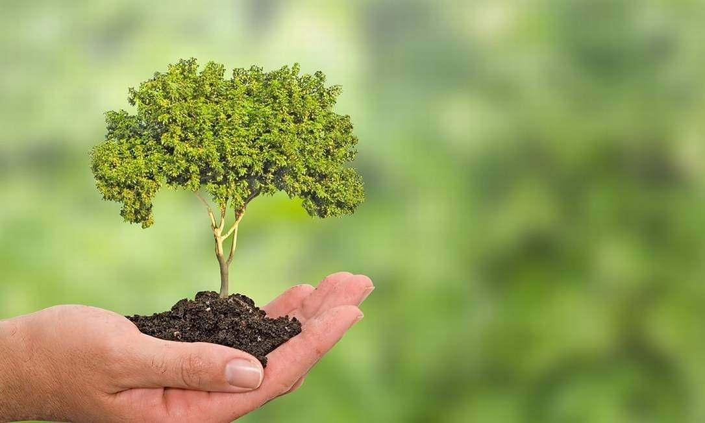
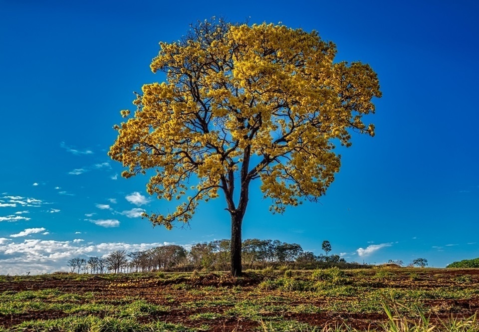

Sustentabilidade Ambiental: Um Compromisso com o Futuro
A sustentabilidade ambiental é uma das questões mais prementes e desafiadoras que enfrentamos atualmente. Em um mundo onde a ação humana exerce um impacto cada vez mais significativo sobre o meio ambiente, a busca por práticas sustentáveis torna-se essencial para a sobrevivência das gerações futuras e a preservação da biodiversidade.
A sustentabilidade ambiental diz respeito à utilização responsável dos recursos naturais, garantindo que as necessidades atuais sejam atendidas sem comprometer as possibilidades das gerações futuras de atenderem às suas próprias necessidades. Essa abordagem abrange diversas áreas, como a conservação dos ecossistemas, a redução da pegada de carbono, a preservação da água potável, a proteção da fauna e flora, entre outros aspectos.
Uma das bases da sustentabilidade ambiental é a adoção de práticas de consumo consciente e a redução do desperdício. Isso envolve, por exemplo, o incentivo ao uso de energias renováveis e a diminuição da dependência dos combustíveis fósseis. Além disso, é fundamental fomentar a reciclagem e a reutilização de materiais, diminuindo a pressão sobre os recursos naturais.
A preservação dos ecossistemas é um dos pilares da sustentabilidade ambiental. Florestas, oceanos, rios e áreas protegidas são essenciais para a manutenção do equilíbrio do planeta e para a sobrevivência de inúmeras espécies. A conscientização sobre a importância da preservação desses ambientes é crucial, assim como a implementação de políticas de conservação e ações concretas para combater a degradação e a perda dessas áreas preciosas.
Outro aspecto crucial da sustentabilidade ambiental é a busca por uma agricultura e pecuária mais sustentáveis. É fundamental promover práticas agrícolas que respeitem o solo, evitando a erosão e a perda de nutrientes. O estímulo à agricultura orgânica e a adoção de técnicas agroecológicas contribuem para a preservação do meio ambiente e para a saúde dos seres humanos.
Preservando a Natureza para um Futuro Sustentável

Cidades Verdes: Construindo Espaços Sustentáveis

Energias Renováveis: A Força do Amanhã



